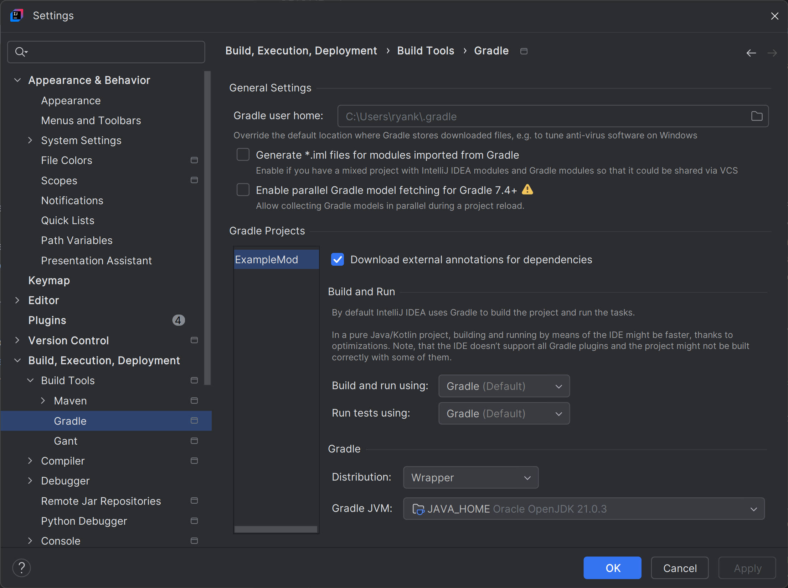
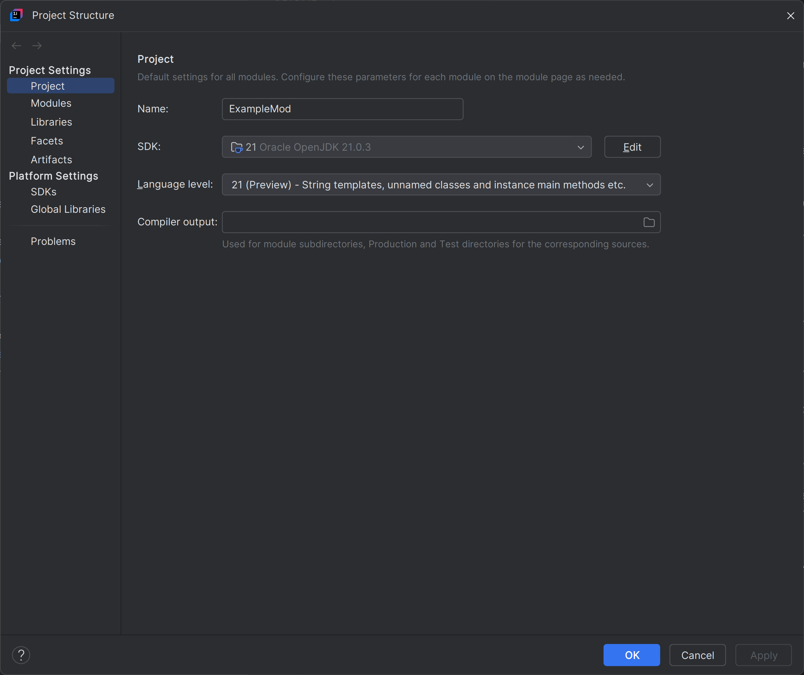
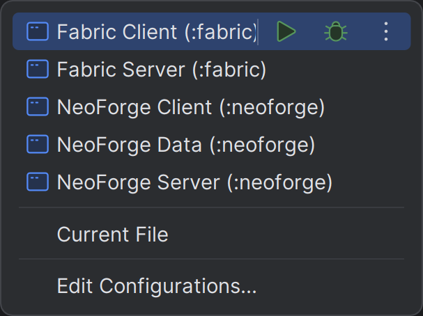
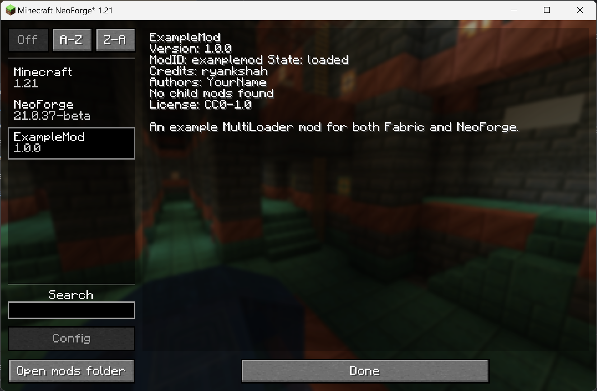

Minecraft Modding Tutorials
Learn the basics, explore advanced techniques, and create mods that transform your Minecraft world. These step-by-step tutorials are designed to make getting into modding Minecraft a bit easier!
Getting Started ‐ MultiLoader 1.21+
The term MultiLoader might sound a bit daunting to a beginner, or even for some who have been modding for one loader for a while. However, I assure you it is relatively simple once you get to grips with the concepts behind it.
Getting the JDK
Prior to modding, you need to ensure you have installed JDK 21. Please find the appropriate version on the Oracle JDK webpage and install Version 21 on your machine. Ensure to set your path to point to JDK 21 correctly, advice on this can be found on Oracle's JDK installation help page.
Setting up the environment
For these tutorials, we will be using jaredlll08's MultiLoader Template to get set up. First, you want to ensure that you have downloaded the template from their GitHub repository. You can either download it as a .zip file and extract it to where you will be modding (i.e., in Documents/ExampleMod), or if you are familiar with Git/GitHub, you can simply clone that repository.
Before we get to downloading any IDEs for coding your mod, there's a couple of things to do beforehand.
First, you will want to open up the gradle.properties file. Everything that will be used to configure your mod project is set in this file. The build.gradle has a set of tasks it will run when you build the project in a few steps, to make sure that the values set here are also set in both the Fabric and NeoForge folders.
You will want to set the following properties to be that of your own mod:
- group=com.example.examplemod
- mod_name=ExampleMod
- mod_author=YourName
- mod_id=examplemod
- description=An example MultiLoader mod for both Fabric and NeoForge.
The group property is typically set using common naming conventions, such as those suggested by Oracle. Given that the package structure we will intend to use to structure our mod will start with com.example.examplemod, we will stick to this for this tutorial. As a real example, my website domain is ryankshah.com, so for my Skyrimcraft mod, I use com.ryankshah.skyrimcraft as the group.
Click to see gradle.properties
# Important Notes:
# Every field you add must be added to the root build.gradle expandProps map.
# Project
version=1.0.0
group=com.example.examplemod
java_version=21
# Common
minecraft_version=1.21
mod_name=ExampleMod
mod_author=Jared
mod_id=examplemod
license=CC0-1.0
credits=
description=The description of your mod. \nAccepts multilines.
minecraft_version_range=[1.21, 1.22)
## This is the version of minecraft that the 'common' project uses, you can find a list of all versions here
## https://projects.neoforged.net/neoforged/neoform
neo_form_version=1.21-20240613.152323
# The version of ParchmentMC that is used, see https://parchmentmc.org/docs/getting-started#choose-a-version for new versions
parchment_minecraft=1.21
parchment_version=2024.06.23
# Fabric
fabric_version=0.100.1+1.21
fabric_loader_version=0.15.11
# Forge
forge_version=51.0.17
forge_loader_version_range=[51,)
# NeoForge
neoforge_version=21.0.37-beta
neoforge_loader_version_range=[4,)
# Gradle
org.gradle.jvmargs=-Xmx3G
org.gradle.daemon=false
Next you will want to open the settings.gradle file and change the rootProject.name to the folder of your project where all the multiloader files are located. For this tutorial, the folder name is ExampleMod, so this property will be rootProject.name = 'ExampleMod'. Lastly, in this tutorial we will not be covering Minecraft Forge, so use a hashtag to comment out the forge line at the bottom of the settings file: # include('forge').
The IDE
Great! So now we are ready to get started. For this tutorial, we will be using the IntelliJ IDEA development environment (IDE). You can download the Community Edition for free on their website.
Once you have installed the IDE, press the "Open" button when launched and navigate to the root folder of your modding project. This folder for the tutorial is called "ExampleMod" so I will choose this folder.
This will initiate the setup of the gradle project and build your mod workspaces. This may take a few minutes so grab a coffee or snack while you wait.
If your default JVM/JDK is not Java 21 you will encounter an error when opening the project. This error is fixed by going to File > Settings > Build, Execution, Deployment > Build Tools > Gradle > Gradle JVM and changing the value to a valid Java 21 JVM.
You will also need to set the Project SDK to Java 21. This can be done by going to File > Project Structure > Project SDK. Once both have been set open the Gradle tab in IntelliJ IDEA and click the refresh button to reload the project.
Open your Run/Debug Configurations. Under the Application category there should now be options to run Fabric and NeoForge projects (see image below). Select one of the client options and try to run it. If it runs, your modding workspace should now be setup and you can continue to the next part of the tutorial below.
Finally, before you move on, you will need to go through the fabric and neoforge project folders and change the package structures to match that in your common project. As well as this, make sure you go into the class called Constants in the common project folder, and change the Mod ID and name to that of your mod. Ensure that your Mod ID is the same as the one you defined in your gradle.properties file earlier. You may also want to delete the mixin-related files and remove references to the mixins in your fabric.mod.json and neoforge.mods.toml files. You can see the final setup example by viewing the GitHub source for this tutorial above.
